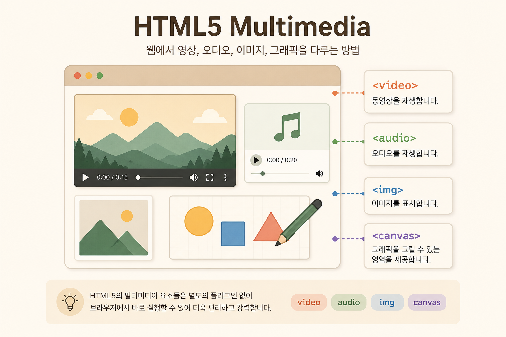
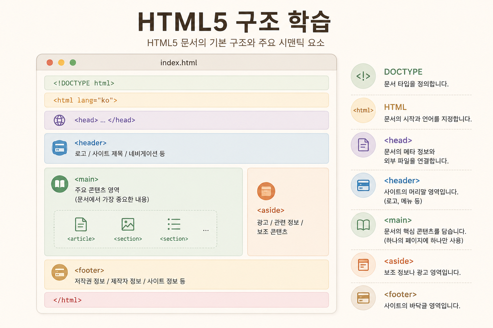
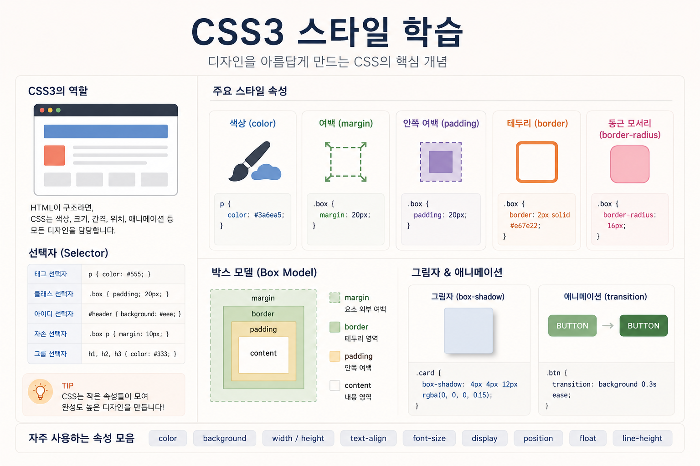
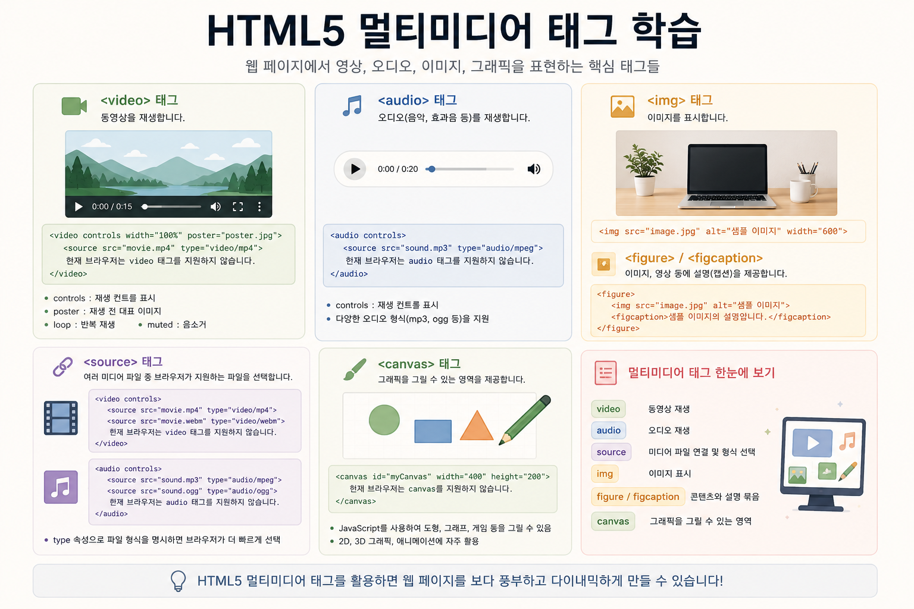

HTML5 & CSS3 · Chapter 03
03. Media & Figure
이 페이지에서는 HTML5에서 이미지, 비디오, 오디오 같은 미디어를 다루는 방법을 공부합니다.
img, figure, figcaption, video,
audio 태그를 활용해
학습 매거진에 어울리는 미디어 카드와 설명형 콘텐츠 구조를 만들어봅니다.
HTML5 멀티미디어란?
HTML5는 별도의 플러그인 없이 웹 브라우저에서
영상, 오디오, 이미지, 그래픽 콘텐츠를 다룰 수 있도록
다양한 멀티미디어 태그를 제공합니다.
대표적인 태그로는 video, audio, source, canvas, figure, figcaption이 있습니다.
1. video 태그
video 태그는 웹 페이지 안에서 동영상을 재생할 때 사용합니다.
controls 속성을 사용하면 재생, 정지, 음량 조절 버튼이 표시됩니다.
2. video 주요 속성
video 태그는 여러 속성을 통해 재생 방식을 제어할 수 있습니다.
3. audio 태그
audio 태그는 음악, 효과음, 강의 음성 같은 오디오 파일을 웹 페이지에서 재생할 때 사용합니다.
4. source 태그
source 태그는 video 또는 audio 태그 안에서 실제 미디어 파일을 연결할 때 사용합니다.
브라우저는 위에서부터 읽으면서 재생 가능한 파일 형식을 자동으로 선택합니다.
현재 프로젝트에서는 직접 만든
html5_css3_intro.mp4,
html5_css3_intro_audio.mp3,
html5_css3_poster.jpg
파일을 사용하고 있습니다.
<video controls poster="../images/html5_css3_poster.jpg">
<source src="../video/html5_css3_intro.mp4" type="video/mp4">
현재 브라우저는 video 태그를 지원하지 않습니다.
</video>
<audio controls>
<source src="../audio/html5_css3_intro_audio.mp3"
type="audio/mpeg">
현재 브라우저는 audio 태그를 지원하지 않습니다.
</audio>
5. figure와 figcaption
figure 태그는 이미지, 영상, 표, 코드 예시처럼 설명이 필요한 콘텐츠를 하나의 독립된 묶음으로 표현할 때 사용합니다.

6. canvas 태그
canvas 태그는 웹 페이지 안에 그래픽을 그릴 수 있는 영역을 만듭니다.
실제 도형이나 그림을 그리려면 JavaScript가 필요합니다.
이번 HTML/CSS 프로젝트에서는 canvas 영역만 만들고, 실제 그림 그리기는 JavaScript 학습 때 확장합니다.
7. 미디어 카드 갤러리
figure, figcaption, border-radius, box-shadow를 함께 사용하면 깔끔한 미디어 갤러리를 만들 수 있습니다.



8. 정리
HTML5 멀티미디어 태그는 웹 페이지를 단순한 문서에서
영상, 오디오, 이미지, 그래픽을 포함하는 풍부한 콘텐츠 공간으로 확장합니다.
모든 audio, images, video 파일들은 ChatGPT를 활용해 직접 만들었습니다.